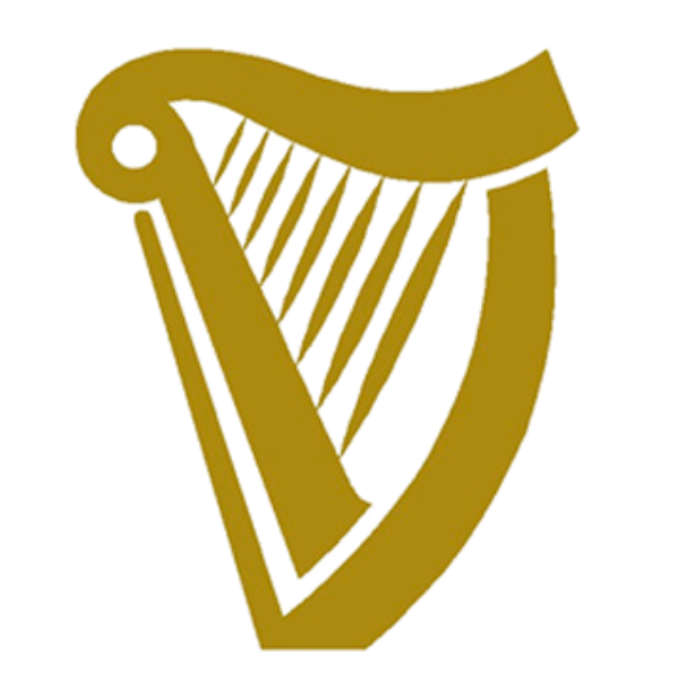

The Guinness Storehouse
From learning how Guinness is made to getting a pint with my face on the foam, the Storehouse was one of the best parts of my trip! I'm so happy we didn't skip it.
Visit the Storehouse →Ireland's 6th Food Group
During Week 2, I visited the Guinness Storehouse and finally learned what makes a "good pint". After spending my evenings in the pubs, it was fun getting to see the brewing process behind the most ordered drink in Ireland.

GUINNESSClick to try splitting the G.
From learning how Guinness is made to getting a pint with my face on the foam, the Storehouse was one of the best parts of my trip! I'm so happy we didn't skip it.
Visit the Storehouse →Some of my favorite evenings were spent in the pubs with my friends! There was live music, crowded bars, and lots of Guinness!
Explore the Pubs →